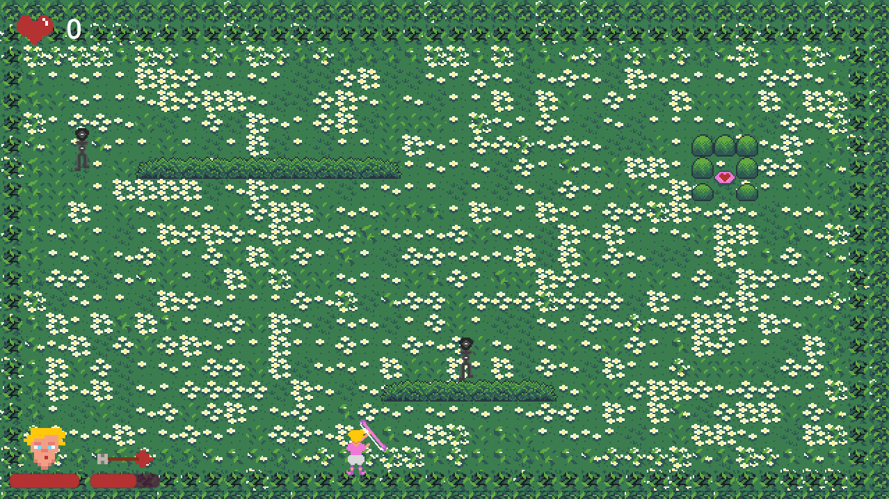

Auto-shooter game centered around the theme "Valentine's Day" for Valentine's Day Game Jam 2024.
Solo developed using the Godot 4 engine in 3 days. This was my first time using Godot as well as finishing a game jam!